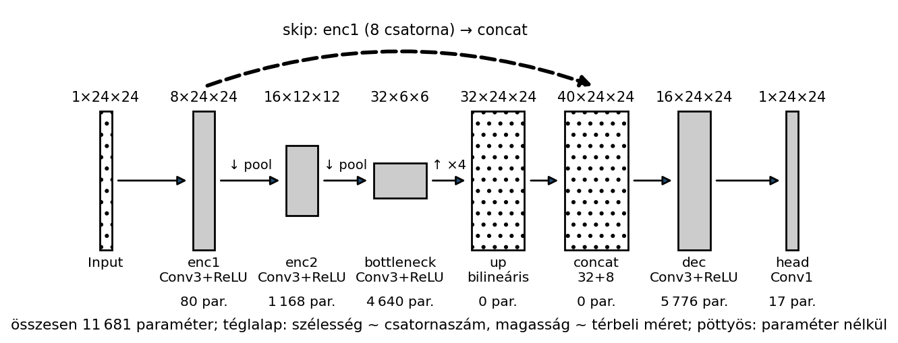

A 39.1. Feladat- és annotációs döntés egységben rögzítettük a projekt annotációs döntését. Ebben az alfejezetben a szegmentáló főutat építjük meg: az encoder–decoder törzs után egy spatial head állítja elő a pixelszintű logit-maszkot, és a célmaszkkal konzisztens loss redukcióját vezetjük le. Előismeret a 27.2. U-Net, encoder–decoder és skip U-Net-alakok és a 38.2. Modell, training és best checkpoint tanítási szerződés; a 35.2. Magyarázat sanity check magyarázat-ellenőrzésből csak annyit használunk, hogy minden kimeneti állítást a modell tényleges számítási útjához kötünk.
Induló kérdés: miért nem elég egy Linear(576, 576)
réteg, ha a kép és a maszk egyaránt
pixel? A válasz a térbeli indexelésben és a paramétermegosztásban van: a
kép pontjainak sorrendje hordozza a geometriát, egy teljesen összekötött
réteg ezt a sorrendet el tudja rontani, a konvolúciós fej viszont
megtartja.
Legyen a dekódoló utolsó jellemzőtérképe
A bináris szegmentáló fej egy -es konvolúció, amely minden térbeli pozícióban azonos affin leképezést alkalmaz a csatornavektorra:
ahol és . A kimenet egyetlen logitcsatorna, mert egy előtérosztályunk van:
A cél ugyanilyen térbeli alakú bináris maszk:
A főútban , mert a függelék A. A GlyphLab adatkészlet szakaszában leírt GlyphLab maszkjai natív felbontásúak. A választott kis modell az U-Net elvű encoder–decoder séma [P14] játékméretű változata; az egyszerűség kedvéért csak a legfinomabb felbontású skip van meg, és a nagyítás egy lépésben történik (a teljes U-Net minden szinten visszaadja a skipet, lásd 27.2. U-Net, encoder–decoder és skip):
| Lépés | Réteg | Kimenet alakja |
|---|---|---|
| bemenet | ||
| enc1 | Conv2d , , + ReLU | |
| pool1 | MaxPool2d(2) | |
| enc2 | Conv2d , , + ReLU | |
| pool2 | MaxPool2d(2) | |
| bottleneck | Conv2d , , + ReLU | |
| up | bilineáris interpoláció az enc1 méretére | |
| concat | az up és enc1 csatorna szerint | |
| dec | Conv2d , , + ReLU | |
| head | Conv2d , |
A paraméterszám csak konvolúciós súly és bias: ; az upsamplingnek és a poolingnak nincs paramétere. A lokalizációs alternatíva ebben az egységben nem a főút: ahhoz a head például dobozparaméteres térképet vagy egy utólagos regresszorfejet adhatna. Az itteni szegmentáló fej önálló oktatási példa, nem a [D18] dokumentáció detektálási receptjének reprodukciója.

A GlyphLab-kép -es. Az általános szimmetrikus paddinges Conv2d-alakképlet:
ahol a bemeneti magasság, a kernel mérete, a padding, a dilation, a stride (a szélességre ugyanez a képlet érvényes -vel). A , , , esetben . A , MaxPool2d esetében és mellett , majd . A bottleneck tehát -os, csatornával.
A dekódoló upsampling lépése explicit méretet kap:
Upsample(size=(24,24), mode="bilinear", align_corners=False).
Bilineáris átmintavételezésnél az align_corners=False
konvenció félegységnyi eltolással helyezi a kimeneti rácspontokat a
forrásrácsra; a size=(24,24) argumentum azonban nem hagy
kerekítési szabadságot, a kimenet térbeli alakja pontosan a kért
.
A kódoló első aktivációja is
-es,
ezért a csatorna szerinti összefűzés jól definiált, és a csatornaszám
.
A dekódoló
,
konvolúciója ismét megőrzi a
-et,
a fej
-es
konvolúciója pedig nem változtat a térbeli alakon. A végső logit-maszk
így ugyanazon a rácson értelmezett, mint a célmaszk.
Minden pixelre, ahol a -es rács sorfolytonos lineáris indexe (a rácspont sorszáma), a logit , a címke . A pixel feltételes modellje Bernoulli:
ahol . A negatív log-likelihood az azonos alakú, nem redukált BCE:
A kiválasztott empirikus loss rögzített térbeli nevezővel átlagol:
A nevező akkor is pozitív egész, ha egy képen egyáltalán nincs előtérpixel. Ez a kulcs az üres cél kezeléséhez: ha a normalizálást a foreground-pixelek számához kötnénk, üres maszknál nullával osztanánk. Itt ehelyett az üres cél is értelmes, véges tanulási jelet ad: minden pixelre , így a loss a háttérlogitek lenyomására tanít.
A gradiens levezetése egy pixelre a logisztikus függvény deriváltját használja. Mivel ,
Az átlagredukció után tehát
A
torch.nn.functional.binary_cross_entropy_with_logits(..., reduction="none")
(illetve az nn.BCEWithLogitsLoss(reduction="none")
csomagolás) ezt a nem redukált
-t
adja vissza
alakban, majd a .mean() implicit módon
-vel
oszt. Numerikusan a szigmoid és a logaritmus külön hívása instabil; a
könyvtári függvény a logitot közvetlenül fogadja, ezért a saját kódban
külön sigmoid-hívást nem végzünk.
A logit- vagy jellemzőtérkép bilineáris felnagyítása a tanuló modell része, ezért folytonos értékei a gradiensszámításban jól definiáltak. A bináris célmaszk bilineáris interpolálása viszont nem konzisztens címkeképzés: az -es előtér és a -ás háttér közötti élen olyan értékek keletkeznek, amelyek sem nem megfigyelt maszk, sem nem valószínűségi súly. Ha a cél felbontását mégis változtatni kell, a maszkra nearest-neighbor mintavételt használunk, például a páros indexű pixelek kiválasztását. A főútban erre nincs szükség: a modell kimenete a natív -es célrácsra illeszkedik.
A kimenet és a target azonos pixelszáma nem elég, ha a térbeli illesztés hibás. Legyen -es logit-maszk
és a helyes cél
Mindkét célváltozatban egyetlen előtérpixel van, tehát a pixelszám azonos. A helyes illesztésnél mind a négy pixel helyes (az előtérpixel logitja pozitív, a háttérpixeleké negatív), az összegzett binary cross-entropy:
Ha a cél elcsúszik,
akkor két pixel téves (a pozitív logitja háttércímkével, a negatív logitja előtércímkével találkozik), kettő pedig helyes, és az összegzett veszteség
A fenti két összegzett veszteség (reduction='mean'
mellett) 4-gyel osztandó:
,
illetve
;
float64-ben a pontos összegek
és
(Python 3.12.3, PyTorch 2.15.0+cpu, CPU).
Az eltérés abból fakad, hogy a nagy pozitív logit a háttércímkével, a
nagy negatív logit pedig az előtércímkével találkozik (két téves pixel).
Az AssertionError-t nem vált ki egy shape-ellenőrzés, mert
mindkét eset (1,1,2,2); csak a veszteség vagy egy
pixelpontossági/konfúziós kontroll mutatja ki a hibát; a Dice-t a 39.3. Geometriai kontroll és metrika vezeti be.
A Projekt III összes szkriptje a lab/project3
munkakönyvtárban van (ott készült a 39.1. Feladat-
és annotációs döntés annotation_spec.py-ja is); az
adatok a GlyphLab lab/data/ könyvtárából töltődnek. Az első
szkript a modellt és a loss-szerződést ellenőrzi egy rögzített kis
batch-en.
# lab/project3/segmentation_head.py
from __future__ import annotations
import csv
from pathlib import Path
import numpy as np
import torch
from torch import nn
import torch.nn.functional as F
DATA = Path(__file__).resolve().parents[1] / "data"
torch.set_num_threads(1) # egyszálas CPU: az összegzési sorrend az adott gépen
# nem függ a magszámtól; gépek és verziók között a bitazonosság nem garantált
class SmallSegUNet(nn.Module):
"""GlyphLab 24x24-es maszkfej; a kimenet (N,1,24,24) logit."""
def __init__(self, in_ch: int = 1, out_ch: int = 1, base: int = 8) -> None:
super().__init__()
self.enc1 = nn.Sequential(
nn.Conv2d(in_ch, base, 3, padding=1), nn.ReLU()
)
self.pool = nn.MaxPool2d(2)
self.enc2 = nn.Sequential(
nn.Conv2d(base, 2 * base, 3, padding=1), nn.ReLU()
)
self.bottleneck = nn.Sequential(
nn.Conv2d(2 * base, 4 * base, 3, padding=1), nn.ReLU()
)
self.dec = nn.Sequential(
nn.Conv2d(4 * base + base, 2 * base, 3, padding=1), nn.ReLU()
)
self.head = nn.Conv2d(2 * base, out_ch, 1)
def forward(self, x: torch.Tensor) -> torch.Tensor:
e1 = self.enc1(x) # (N,8,24,24)
p1 = self.pool(e1) # (N,8,12,12)
e2 = self.enc2(p1) # (N,16,12,12)
p2 = self.pool(e2) # (N,16,6,6)
b = self.bottleneck(p2) # (N,32,6,6)
# a nagyítás célmérete a skip térképéé, így más bemeneti méretnél is illeszkedik
u = F.interpolate(b, size=e1.shape[-2:], mode="bilinear",
align_corners=False) # (N,32,24,24)
c = torch.cat([u, e1], dim=1) # (N,40,24,24)
d = self.dec(c) # (N,16,24,24)
return self.head(d) # (N,1,24,24)
def bce_fixed_denominator(logits: torch.Tensor, targets: torch.Tensor) -> torch.Tensor:
"""Pixel-BCE, a nevező mindig N*1*H*W; üres target esetén is stabil."""
if logits.shape != targets.shape:
raise ValueError(
f"logit/cél alak eltérés: {tuple(logits.shape)} vs {tuple(targets.shape)}"
)
per_pixel = F.binary_cross_entropy_with_logits(
logits, targets, reduction="none"
)
return per_pixel.mean()
def load_train_batch(n: int = 8) -> tuple[torch.Tensor, torch.Tensor]:
images = np.load(DATA / "images.npy") # (360,1,24,24) float32
masks = np.load(DATA / "masks.npy").astype(np.float32) # (360,1,24,24) {0,1}
assert images.shape == (360, 1, 24, 24), images.shape
assert masks.shape == (360, 1, 24, 24), masks.shape
assert np.all(np.isin(masks, [0.0, 1.0])), "nem bináris maszk"
with open(DATA / "metadata.csv", newline="") as f:
rows = list(csv.DictReader(f))
assert list(rows[0]) == ["index", "scene_id", "view_id", "label", "split",
"xmin", "ymin", "xmax", "ymax"], list(rows[0])
assert len(rows) == len(images) == len(masks) == 360, (len(rows), images.shape)
# Az index a fájlsor indexe: ezért használható a metadata indexe közvetlenül
# az images.npy és a masks.npy sorainak kiválasztására.
assert [int(r["index"]) for r in rows] == list(range(len(rows)))
idx = [int(r["index"]) for r in rows if r["split"] == "train"][:n]
x = torch.from_numpy(images[idx])
y = torch.from_numpy(masks[idx])
assert x.shape == (n, 1, 24, 24), x.shape
assert y.shape == (n, 1, 24, 24), y.shape
return x, y
def main() -> None:
torch.manual_seed(20261020)
device = torch.device("cpu")
model = SmallSegUNet().to(device)
x, y = load_train_batch(8)
x, y = x.to(device), y.to(device)
# 1. Alakellenőrzés.
with torch.no_grad():
z0 = model(x)
assert z0.shape == (8, 1, 24, 24), z0.shape
# 2. BCE numerikus kontroll egy pixelre: z=0.5, y=1 esetén
# log(1+exp(-0.5)) ~ 0.474077.
one = torch.tensor([[[[0.5]]]], dtype=torch.float32, device=device)
target_one = torch.ones_like(one)
loss_px = float(F.binary_cross_entropy_with_logits(one, target_one))
assert abs(loss_px - 0.474077) < 1e-5, loss_px
# 3. Üres cél: véges, gradiense nem NaN. A z0 no_grad alatt készült,
# ezért a backwardhoz új, gráffal rendelkező forward kell.
empty = torch.zeros_like(x)
loss_empty = bce_fixed_denominator(model(x), empty)
assert torch.isfinite(loss_empty), loss_empty
loss_empty.backward()
assert all(torch.isfinite(p.grad).all() for p in model.parameters() if p.grad is not None)
# 4. Kis túlillesztési sanity check: a loss csökken a rögzített batch-en.
model.train()
opt = torch.optim.Adam(model.parameters(), lr=1e-3)
losses: list[float] = []
for _ in range(60):
opt.zero_grad()
loss = bce_fixed_denominator(model(x), y)
loss.backward()
opt.step()
losses.append(loss.item())
assert torch.isfinite(torch.tensor(losses)).all()
assert losses[-1] < losses[0], f"{losses[0]:.4f} -> {losses[-1]:.4f}"
print(f"loss {losses[0]:.4f} -> {losses[-1]:.4f} (CPU, 8 train kép)")
if __name__ == "__main__":
main()Futtatási parancs:
cd lab/project3
python segmentation_head.pyAz ellenőrzés értelmezése: a 2. numerikus egyezés a per-pixel BCE képletét és számértékét ellenőrzi, nem a térbeli illesztést. A 3. lépés az üres cél véges lossát és gradiensét; a 4. lépés azt, hogy a rögzített batch-en a gradiensút működik és a loss csökken. A csökkenő loss önmagában nem zárja ki a térbeli eltolást: ha a cél el van tolva, a modell ahhoz is illeszkedhet, és a loss akkor is csökkenhet; a 39.2.6 eltolt-cél ellenpéldájában ugyanannyi előtérpixel mellett a rossz illesztés lossa , a helyesé . A loss kezdeti értéke a maszk előfordulási arányától függ, ezért önmagában nem viszonyítási alap. A sanity-check lossa 8 train képre, a későbbi val BCE pedig a teljes val splitre vonatkozik, ezért a két szám nem hasonlítható össze. A valós kiértékelés a 39.3. Geometriai kontroll és metrika metrikájával, a legjobb checkpointot pedig a 38.2. Modell, training és best checkpoint szabálya szerint a validációs loss alapján végezzük; a corrupt tesztet csak a protokoll végén értékeljük.
A rögzített környezetben (CPU, Python 3.12.3, NumPy 2.5.4, PyTorch
2.15.0+cpu, 1 szál) a szkript minden assert-en átment, és
loss 0.5897 -> 0.1252 (CPU, 8 train kép) sort írt.
A sanity check után a főág a teljes train spliten tanít, és a 38.2. Modell, training és best checkpoint szabálya szerint a legkisebb validációs BCE-jű epoch állapotát menti. A teszt itt nem nyílik meg; a tesztkiértékelés és az export a 39.4. Alkalmazási riport és átadás alfejezetben történik, ebből a checkpointból.
# lab/project3/train_seg.py — n154 főág: SmallSegUNet tanítása, best checkpoint val BCE alapján.
import csv, json
from pathlib import Path
import numpy as np
import torch
from segmentation_head import DATA, SmallSegUNet, bce_fixed_denominator
HERE = Path(__file__).resolve().parent
SEED, EPOCHS, BATCH, LR = 20261020, 30, 16, 1e-3
def split_ids(split):
with open(DATA / "metadata.csv", newline="") as f:
rows = list(csv.DictReader(f))
assert list(rows[0]) == ["index", "scene_id", "view_id", "label", "split",
"xmin", "ymin", "xmax", "ymax"], list(rows[0])
assert len(rows) == 360, len(rows)
assert [int(r["index"]) for r in rows] == list(range(len(rows)))
return np.array([int(r["index"]) for r in rows if r["split"] == split])
def main():
torch.manual_seed(SEED)
images = torch.from_numpy(np.load(DATA / "images.npy")) # (360,1,24,24)
masks = torch.from_numpy(np.load(DATA / "masks.npy").astype(np.float32)) # (360,1,24,24)
assert images.shape == (360, 1, 24, 24), images.shape
assert masks.shape == (360, 1, 24, 24), masks.shape
assert torch.all((masks == 0) | (masks == 1)), "nem bináris maszk"
assert len(images) == len(masks) == 360, (images.shape, masks.shape)
tr, va = split_ids("train"), split_ids("val") # a teszt itt nem nyílik meg
assert len(tr) == 240 and len(va) == 60, (len(tr), len(va))
model = SmallSegUNet()
opt = torch.optim.Adam(model.parameters(), lr=LR)
g = torch.Generator().manual_seed(SEED)
(HERE / "checkpoints").mkdir(exist_ok=True)
best, log = {"val_loss": float("inf")}, []
for epoch in range(1, EPOCHS + 1):
model.train()
perm = tr[torch.randperm(len(tr), generator=g).numpy()]
for i in range(0, len(perm), BATCH):
b = perm[i:i + BATCH]
opt.zero_grad(set_to_none=True)
loss = bce_fixed_denominator(model(images[b]), masks[b])
loss.backward()
opt.step()
model.eval()
with torch.no_grad():
val_loss = float(bce_fixed_denominator(model(images[va]), masks[va]))
log.append({"epoch": epoch, "train_last_batch_loss": loss.item(), "val_loss": val_loss})
if val_loss < best["val_loss"]:
best = {"epoch": epoch, "val_loss": val_loss}
torch.save({"model_state_dict": model.state_dict(), "arch": "SmallSegUNet",
"epoch": epoch, "val_loss": val_loss, "seed": SEED,
"params": sum(p.numel() for p in model.parameters()),
"threshold": 0.5}, HERE / "checkpoints" / "seg_best.pt")
(HERE / "checkpoints" / "seg_train_log.json").write_text(json.dumps(log, indent=1))
print(f"best epoch {best['epoch']}, val BCE {best['val_loss']:.4f} -> checkpoints/seg_best.pt")
if __name__ == "__main__":
main()cd lab/project3
python train_seg.pyA kimenet a checkpoints/seg_best.pt (kulcsai:
model_state_dict, arch, epoch,
val_loss, seed, params,
threshold) és a checkpoints/seg_train_log.json
epochnapló. A küszöb
(
a szigmoid kimenetén) a checkpoint része, így a későbbi export nem
választhat más küszöböt a teszt ismeretében. Futási
jegyzőkönyv: a rögzített környezetben (Python 3.12.3, NumPy
2.5.4, PyTorch 2.15.0+cpu, CPU, 1 szál, seed 20261020) két egymás utáni
futás fali ideje 5,49 s és 5,52 s volt; mindkettő
best epoch 30, val BCE 0.0029 sort írt. A
seg_best.pt SHA-256 értéke mindkét futásban
b8e8958b…, a seg_train_log.json értéke
beb13310…, azaz a checkpoint és a napló byte-azonos. A
legjobb epoch a 30., azaz a 30 epochás keret utolsó epochja; a val BCE a
25. és a 30. epoch között
-ról
-re
csökkent, ezért a tanítás ezen a kereten belül nem konvergált, és
hosszabb keret indokolt. A sanity-check 8 képes train lossa és a 60
képes val BCE más adathalmazon és más epochszámmal mérődött, ezért a két
szám nem összevethető.
F1 (fogalmi, nehézség 1). Indokolja meg, miért
egycsatornás a választott spatial head kimenete, és adjon ellenpéldát
arra, hogy egy nn.Flatten() +
nn.Linear(576, 576) miért nem helyettesíti a fejet akkor
sem, ha a pixelszám egyezik.
F2 (levezetési, nehézség 2). Legyen , , . Az első kép célja teljesen üres, a második kép pixelén . Írja fel a loss nevezőjét, a teljes összegzési határait, és a gradiens értékét a két kijelölt pixelre. Adja meg az autograddal konzisztens skálatényezőt is.
F3 (implementációs, nehézség 2). Készítsen
nearest_target_half(y) függvényt, amely egy
(N,1,H,W) alakú uint8 maszkból a páros indexű pixelek
kiválasztásával (N,1,H//2,W//2) alakot állít elő. Páratlan
vagy
esetén emeljen ValueError-t. Tesztelje az
bemenetre az elvárt
kimenetet. A megadott mátrixot a függvény bemeneti szerződése szerint
(1,1,4,4) alakra hozva kell átadni.
F4 (hibakeresési, nehézség 1). Egy hallgató a natív
-as
target maszkot
F.interpolate(target_float, size=(24,24), mode="bilinear")
módon kicsinyíti, majd ezt adja a BCE-nek. A training hiba nélkül lefut,
a validációs Dice mégis rossz. Nevezze meg a hiba következményét a
célértékekre, adjon kimutatási módszert és javítást.
F5 (kísérleti/transzfer, nehézség 3). Tegyük fel, hogy egy új adatkészlet -as maszkokkal érkezik, a képek viszont továbbra is -esek, ezért a modell dekódolója változatlanul logitot ad. Tervezzen kis összehasonlító kísérletet két ágra: (A) a logitot bilineárisan -ra nagyítjuk, és ott számítjuk a BCE-t; (B) a célmaszkot nearest módon -re csökkentjük. Adja meg a megfigyelési egységet, a splitet, a baseline-t, a metrikát, a két loss nevezőjét, valamint a toy kísérlet érvényességi korlátját.
F1. A fej kimenete egy logitcsatorna, mert a bináris
szegmentálás minden pixelre egyetlen előtér-valószínűségi logitot
igényel:
.
A lineáris 576→576 réteg a sorfolytonos (row-major)
lapítási konvenciót égetné be a súlyokba: a nn.Flatten
C-sorrendben lapít, és a Linear súlymátrixának oszlopai
ehhez a sorrendhez kötődnek, ezért ha a későbbi feldolgozás más
sorrendben lapítja ugyanazt a maszkot, azonos pixelszám mellett más
pixel–súly párosítás jön létre. Konkrétan a
logit és az
cél esetén a sorfolytonos párosítás összege
,
a cél oszlopfolytonos lapítása mellett viszont
(a logitokat változatlanul sorfolytonosan lapítva). A réteg emellett
megszüntetné a pixelpozíciók közötti paramétermegosztást:
paramétere van, szemben a
-es
-es
konvolúció
paraméterével. A
-es
konvolúció pozíciófüggetlen affin fej, és a térbeli indexelést a
bemeneti rácstól örökli.
F2. A logit (2,1,3,3), a cél
ugyanilyen; a logit jelölése
,
ahol
a kép,
az egyetlen csatorna,
a térbeli index. A pixelek száma képenként
,
így a nevező
.
A loss
Az első kép üres, de a nevező változatlan. Az első kép
pixelére
,
ezért a gradiens
.
A második kép
pixelére
,
ezért a gradiens
.
Ha a kijelölt logitok értéke
,
akkor
,
így a két gradiens
,
illetve
.
Az autograd ugyanezt a skálát adja, mert a mean() redukció
a teljes (N,1,H,W) tenzorelemszámot használja.
F3. Egy lehetséges megoldás:
def nearest_target_half(y: np.ndarray) -> np.ndarray:
if y.ndim != 4 or y.shape[1] != 1:
raise ValueError("várt alak: (N,1,H,W)")
_, _, h, w = y.shape
if h % 2 or w % 2:
raise ValueError(f"páratlan méret: ({h},{w})")
return y[:, :, 0:h:2, 0:w:2]A feladatban szereplő
-es
mátrixot a függvény szerződése szerint előbb (1,1,4,4)
alakra kell hozni (a formázatlan 2D tömböt a függvény szándékosan
ValueError-val utasítja el). A kiválasztott indexek
,
,
,
,
azaz
;
az eredmény
.
Futtatható ellenőrzés:
y = np.array([[1,0,0,0],[0,0,0,0],[0,0,1,1],[0,0,1,1]], dtype=np.uint8).reshape(1,1,4,4)
out = nearest_target_half(y)
np.testing.assert_array_equal(out, np.array([[[[1,0],[0,1]]]], dtype=np.uint8))A páratlan méretre a
nearest_target_half(np.zeros((1,1,5,4), dtype=np.uint8))
ValueError-t ad.
F4. A bilineáris kicsinyítés a bináris célon
és
közötti értékeket hoz létre az előtér–háttér átmeneteknél; például egy
-as
maszk
sor- és oszlopintervallumán lévő téglalapja
-re
kicsinyítve
és
értékeket is ad, tehát a BCE soft labelként értelmezi ezeket. A hiba nem
vált ki RuntimeError-t: a BCEWithLogitsLoss
nem ellenőrzi a cél tartományát, ezért a
-en
kívüli értékeket is hiba nélkül kiszámolja; a tanulási cél viszont már
nem a megfigyelt bináris maszk. Kimutatás: egy éles maszkon az
interpolált tenzor unique() értékeinek megjelenítése; a
bináris kontroll csak {0,1} elemeket enged meg. Javítás: a
targetet ne interpoláljuk, hanem a modell kimenetét igazítsuk a cél
natív felbontásához, vagy ha elkerülhetetlen, nearest módon
mintavételezzük a címkét. Visszaellenőrzés a validációs Dice
újraszámításával és a target min/max
értékével.
F5. Kiinduló hipotézis: a target eredeti
-as
rácsán mért veszteség pontosabban bünteti a határhibákat, de az (A) ág
nagyobb számítási igényű. Megfigyelési egység a scene_id, a
splitet scene-szinten kell tartani. Fix modell, seed és training;
baseline a teljes háttér predikciója. A metrika a legjobb validációs
checkpoint után a
-as
rácson számított thresholdolt Dice/IoU. Az (A) veszteség nevezője
,
a (B) nevezője
.
A (B) ág
-es
logitját a thresholdolás után nearest módszerrel
-ra
nagyítjuk, hogy a két ág ugyanazon a
-as
kiértékelési rácson hasonlítható össze. A két ágat azonos seeddel
tanítjuk; a tesztet scene-enként párosítjuk (ugyanaz a
scene_id ugyanabban a splitben, azonos seed mellett), a
különbséget scene-enként számítjuk, majd a scene-ek közötti átlagot és
bootstrap konfidenciaintervallumot adjuk meg. A toy kísérlet nem
bizonyít általános interpolációs tételt, és egyetlen seed nem ad
általános érvényű garanciát. A tanítás a 39.2
SmallSegUNet-tel, Adam-mal
(),
batch 16 mellett, 30 epochon át, öt seeddel
(–)
történik; a döntési szabály: a páros jelenetszintű Dice-különbség 95%-os
bootstrap-intervalluma nem tartalmaz nullát, és a pontbecslés legalább
Dice; az erőforrás CPU, öt seed és két ág.
A 27.2. U-Net, encoder–decoder és skip levezetéséhez hasonlóan minden egyes rétegre felírtuk a térbeli alakot; a concat előtt ellenőriztük, hogy a két ág és mérete azonos. A 38.2. Modell, training és best checkpoint tanítási szerződéséből megtartottuk, hogy a validáció választ checkpointot, a tesztet csak a rögzített protokoll végén értékeljük. A 35.2. Magyarázat sanity check tanulsága itt annyi, hogy a kimeneti maszk a modell számítási útjának eredménye, nem egy külső magyarázat; a térbeli illesztést éppen ezért a loss és a metrika szintjén kell ellenőrizni, nem pusztán a shape-ek összehasonlításával.
A szegmentáló fej -es konvolúcióból áll, és pixelre lebontott logit-maszkot ad; a GlyphLab főútban a bemenettel azonos -es célrácsra illeszkedik. A skip concat és a bilineáris upsampling alakhelyességét rétegenként vezettük le. A loss nem redukált BCEWithLogits, majd a teljes pixelszámmal átlagolunk; így az üres cél sem okoz nullával osztást. A célmaszkot nem interpoláljuk bilineárisan, mert a bináris címkéből hamis soft label lesz. A sanity check a shape-t, a BCE kis numerikus értékét és a loss csökkenését ellenőrzi kis CPU-futásban.
A 39.3. Geometriai kontroll és metrika egységben a betanított fej kimenetére geometriai kontrollt és szegmentálási metrikát vezetünk be: a thresholdolt maszk Dice/IoU kiértékelését, a per-image, per-scene és micro aggregálást, valamint a páros corrupt tesztre vonatkozó összevetést.